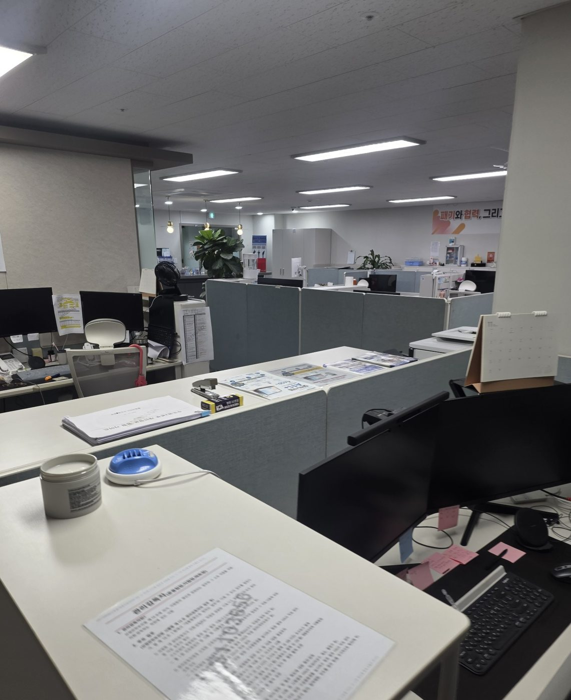
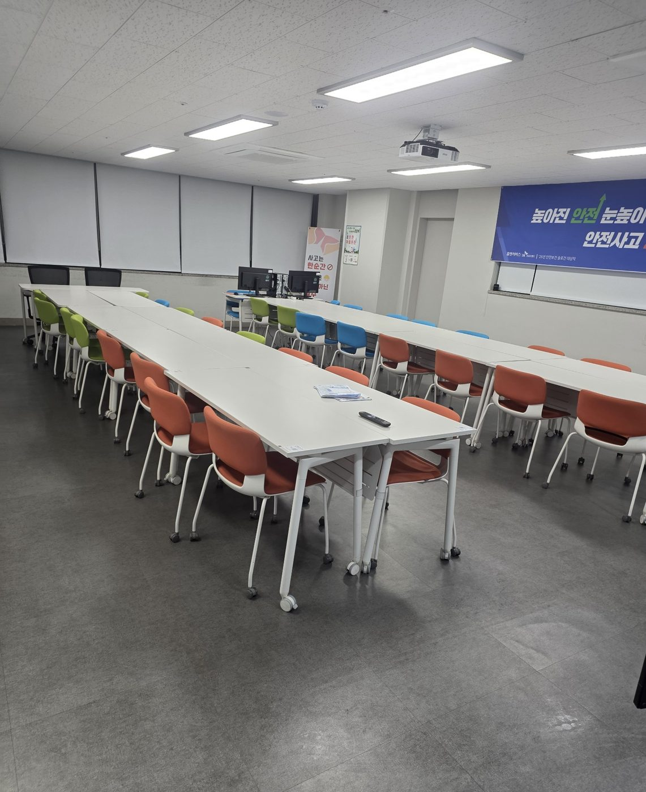
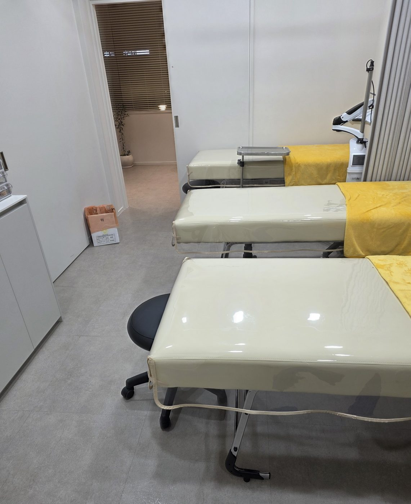
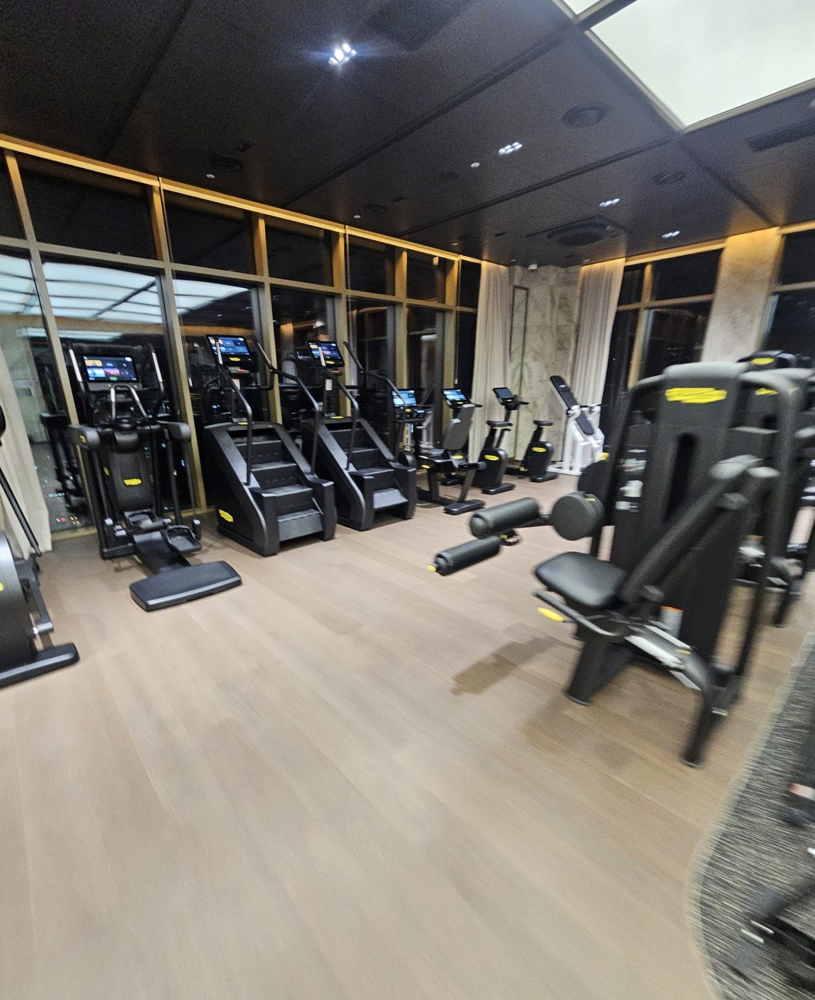

사무실 정기청소
업무 시간에 지장이 없도록 동선을 고려해 관리합니다. 매일 쌓이는 먼지와 공용 공간의 위생을 꾸준히 잡아 줍니다.
- 책상·모니터 주변
- 회의실
- 탕비실
- 공용화장실
- 바닥 관리
17년간 현장에서 쌓아 온 경력과 청소 관련 4개 분야 1급 자격으로 사무실·병원·상가·헬스장의 정기청소를 책임집니다. 친환경 약품으로 정직하게 시공하고, 체계적으로 관리합니다.
공간의 쓰임이 다르면 청소의 순서와 약품도 달라야 합니다. 현장을 먼저 살피고 그 공간에 맞는 관리 방법을 제안합니다.
업무 시간에 지장이 없도록 동선을 고려해 관리합니다. 매일 쌓이는 먼지와 공용 공간의 위생을 꾸준히 잡아 줍니다.
환자가 머무는 공간인 만큼 위생 기준을 높여 관리합니다. 눈에 보이는 곳뿐 아니라 손이 닿는 곳까지 챙깁니다.
고객이 처음 마주하는 홀과 바닥, 기름때가 쌓이는 주방까지 함께 관리합니다. 영업 전후 시간에 맞춰 진행합니다.
땀과 습기가 많은 공간은 냄새와 곰팡이가 관건입니다. 배수구와 매트까지 관리해 쾌적함을 유지합니다.
청소는 한 번의 시공이 아니라 매일의 반복입니다. 그래서 경력과 자격, 그리고 약속을 지키는 태도를 봅니다.
사무실부터 병원·상가·헬스장까지 17년간 현장에서 직접 일해 온 경험으로 공간에 맞는 방법을 압니다.
청소 관련 4개 분야에서 1급 자격을 보유하고 있습니다. 2급 방화관리사 자격도 함께 갖추고 있습니다.
사람이 오래 머무는 공간인 만큼 친환경 약품을 사용합니다. 잔여물과 냄새까지 신경 씁니다.
보이지 않는 곳까지 같은 기준으로 일합니다. 시간을 채우기 위한 시공이 아니라 결과로 보여 드립니다.
한 번 깨끗하게 하고 끝내는 것이 아니라, 정해진 주기와 항목으로 꾸준히 관리해 상태를 유지합니다.
공간과 규모, 관리 주기를 확인한 뒤 견적을 드립니다. 필요한 범위를 먼저 정확히 안내해 드립니다.
배상책임보험은 상담 후 가입 가능합니다. 필요하신 경우 상담 시 말씀해 주세요.
공간의 종류와 규모, 원하시는 관리를 먼저 듣습니다.
현장을 직접 확인하고 필요한 범위로 견적을 드립니다.
업무·영업 시간에 지장이 없도록 주기와 시간을 정합니다.
정해진 항목과 주기로 꾸준히 관리하며 상태를 유지합니다.
말보다 사진이 정확합니다. 실제로 관리하고 있는 사무실·병원·헬스장·라운지의 모습입니다.






※ 현장의 요청에 따라 촬영한 실제 작업 사진입니다.
양천구를 중심으로 서울 서남권과 경기 광명 등 수도권 현장을 관리합니다. 목록에 없는 지역도 상담해 보세요.
사무실, 병원·클리닉, 상가·매장·식당, 헬스장·사우나와 건물 공용부를 정기적으로 관리합니다. 책상·회의실·탕비실·화장실부터 진료실, 주방 트렌치, 운동기구 존과 샤워실 배수구까지 공간에 맞춰 범위를 정합니다.
서울 양천구를 중심으로 강서구·구로구·마포구·금천구(가산·독산)·영등포구와 경기 광명(철산) 등 수도권을 관리합니다. 목록에 없는 지역도 상담 시 확인해 드립니다.
전화(0507-1317-8369)로 공간의 종류와 규모, 원하시는 관리 주기를 알려 주시면, 현장을 확인한 뒤 필요한 범위로 견적을 드립니다.
네. 사람이 오래 머무는 공간인 만큼 친환경 약품을 사용하며, 잔여물과 냄새까지 신경 써서 마무리합니다.
배상책임보험은 상담 후 가입 가능합니다. 필요하신 경우 상담 시 말씀해 주시면 안내해 드립니다.
공간과 규모, 원하시는 관리 주기를 알려 주시면 현장을 확인한 뒤 정확한 견적을 드립니다.